Orlando Travel Guide
City in Central Florida is one of the most-visited cities in the world primarily driven by tourism, major events, and convention traffic, with the two largest and most internationally renowned tourist attractions Walt Disney World Resort and the Universal Orlando Resort
Places to See in Orlando
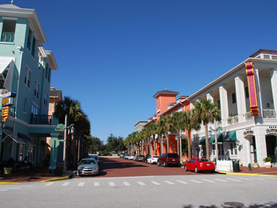
traveljunction, CC BY-SA 2.0, via Wikimedia Commons; Image Size Adjusted
.jpg){kind=link}
Celebration
Community located near Walt Disney World Resort and originally developed by The Walt Disney Company containing shops, restaurants, and other commercial establishments
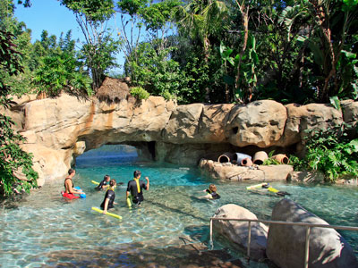
Michael Lowin, CC BY-SA 2.0 DE, via Wikimedia Commons; Image Size Adjusted

Discovery Cove
Theme park owned and operated by SeaWorld Parks & Entertainment where visitors can interact with a range of marine animals including bottlenose dolphins
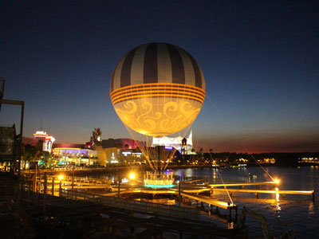
Michael Rivera, CC BY-SA 4.0, via Wikimedia Commons; Image Size Adjusted

Disney Springs
Large outdoor shopping, dining, and entertainment district featuring specialty retailers, restaurants, live performances, waterfront promenades, and family attractions.
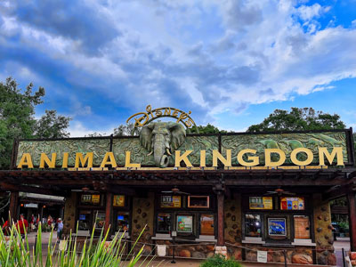
Jennifer Lynn, CC BY 2.0, via Wikimedia Commons; Image Size Adjusted
.jpg){kind=link}
Disneys Animal Kingdom
Zoological theme park at the Walt Disney World Resort is the largest theme park in the world, covering 580 acres
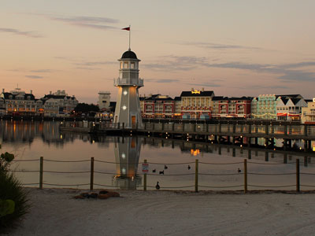
Chad Sparkes from Kissimmee,Florida, United States, CC BY 2.0, via Wikimedia Commons; Image Size Adjusted
.jpg){kind=link}
Disneys Boardwalk Resort
Hotel and entertainment complex at the Walt Disney World resort

Jedi94 at English Wikipedia, CC BY-SA 3.0, via Wikimedia Commons; Image Size Adjusted

Disneys Hollywood Studios
Park dedicated to the imagined worlds from film, television, music, and theatre, drawing inspiration from the Golden Age of Hollywood
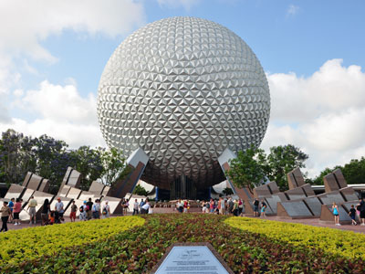
chensiyuan, CC BY-SA 4.0, via Wikimedia Commons; Image Size Adjusted

Epcot
Theme park at the Walt Disney World Resort dedicated to the celebration of human achievement, namely technological innovation and international culture, and is often referred to as a "permanent world's fair"
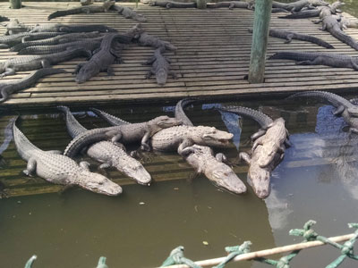
elisfkc, CC BY-SA 2.0, via Wikimedia Commons; Image Size Adjusted
.jpg){kind=link}
Gatorland
Theme park and wildlife preserve billed as the "Alligator Capital of the World," featuring thousands of alligators and crocodiles, and many other animals
Icon Park
Entertainment complex featuring amusement park rides, aquarium, and shopping and dining locations
Lake Eola Park
Public park located in Downtown Orlando famous for its fountain and includes a 0.9-mile multi-use sidewalk surrounds the water
Mennello Museum of American Art
Intimate art museum featuring American paintings, folk art, contemporary works, and rotating exhibitions that celebrate creativity, culture, and artistic expression.
Orange County Regional History Center
Regional history museum housed in a historic courthouse, featuring immersive exhibits that explore Central Florida’s people, cultures, communities, and historical development.
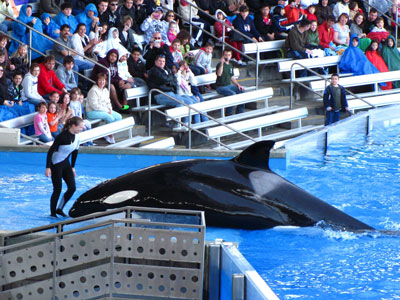
TUFKAAP, CC BY-SA 3.0, via Wikimedia Commons; Image Size Adjusted

SeaWorld Orlando
Theme park and marine zoological park is the 10th most visited amusement park in the United States
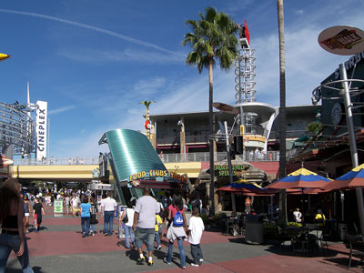
Larry D. Moore, CC BY-SA 3.0, via Wikimedia Commons; Image Size Adjusted

Universal CityWalk
Open-air entertainment district featuring themed restaurants, specialty shops, nightlife venues, miniature golf, live entertainment, and pedestrian access to nearby theme parks.
chensiyuan, CC BY-SA 4.0, via Wikimedia Commons; Image Size Adjusted
Universal Epic Universe
Next-generation theme park featuring immersive lands, cutting-edge attractions, themed dining, entertainment, and experiences inspired by popular films, characters, and fantasy worlds.
chensiyuan, CC BY-SA 4.0, via Wikimedia Commons; Image Size Adjusted
Universal Islands of Adventure
Theme park featuring immersive lands, cutting-edge rides, live entertainment, and attractions inspired by popular films, comic book heroes, and fantasy adventures.
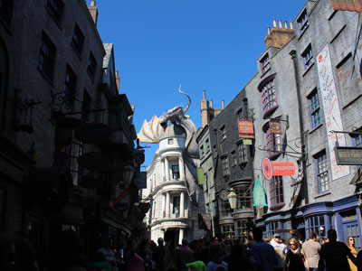
Theme Park Tourist, CC BY 2.0, via Wikimedia Commons; Image Size Adjusted
.jpg){kind=link}
Universal Studios Florida
Theme park and production studio focusing on the entertainment industry, in particular movies and television, encouraging its guests to "ride the movies" and features numerous attractions and live shows
chensiyuan, CC BY-SA 4.0, via Wikimedia Commons; Image Size Adjusted
Universal Volcano Bay
A tropical-themed water park featuring thrilling water slides, wave pools, winding rivers, family attractions, and immersive island-inspired environments centered around a towering volcano.
user:matanya, CC BY-SA 3.0, via Wikimedia Commons; Image Size Adjusted

Walt Disney World Magic Kingdom
Theme parks dedicated to fairy tales and Disney characters is the most visited theme park in the world
Overview
Orlando in Central Florida is the "Theme Park Capital of the World" and one of the most visited destinations on earth, with a record 75 million visitors in 2018. The city itself has roughly 320,000 residents, and the metropolitan area has nearly three million, but the region is known worldwide for Walt Disney World Resort, opened in 1971 about 21 miles southwest of downtown, and Universal Orlando Resort, opened in 1990. The area has seven of the ten most visited theme parks in North America, hundreds of hotels, one of the largest convention centers in the United States and one of the busiest airports in the country, and tourism is the foundation of its economy.
Families come to Orlando for thrill rides, character meet-and-greets, fireworks, water parks, animal encounters and the chance to step into movies and stories they love. It is also popular for its warm weather, which allows outdoor fun for most of the year, for its wide range of resorts, dining and shopping and for its location, a short drive from Florida's beaches, the Space Coast and the Kennedy Space Center. Besides tourism, the city is a center for convention business, simulation and technology, and the University of Central Florida is one of the largest universities in the United States. Away from the parks, Orlando has a charming downtown with lakes, parks, museums and historic neighborhoods.
Orlando began as Fort Gatlin, built in 1838 during the Second Seminole War, and grew in the 1870s and 1880s as settlers arrived, the South Florida Railroad was extended in 1880 and citrus groves and cattle ranching took hold. The city was incorporated in 1875 as a town and in 1885 as a city, and it was known for its orange groves until the severe freezes of 1894 and 1895 pushed citrus growing farther south. The establishment of the Martin Marietta aerospace plant and McCoy Air Force Base in the 1950s brought growth, and then everything changed in 1964 and 1965, when Walt Disney secretly bought about 25,000 acres of land through dummy corporations and announced plans for a second Disney park. Disney chose the area for its inland location, available land and highway access. Magic Kingdom opened on October 1, 1971, Epcot in 1982 and the Universal Studios park in 1990, and Orlando has grown into one of the fastest-growing metropolitan areas in the country.
Walt Disney World, in Bay Lake and Lake Buena Vista, covers roughly 25,000 acres, about the size of San Francisco, and has four theme parks. Magic Kingdom is the classic Disney park, with Cinderella Castle, Space Mountain, Pirates of the Caribbean and nightly fireworks, and is the most visited theme park in the world. EPCOT features futuristic attractions and the World Showcase, with pavilions that represent countries from around the world. Disney's Hollywood Studios features Star Wars: Galaxy's Edge, Toy Story Land and thrill rides like Rise of the Resistance, and Disney's Animal Kingdom combines a zoo, a safari, Pandora – The World of Avatar and the Tree of Life. Two water parks, Typhoon Lagoon and Blizzard Beach, plus Disney Springs, miniature golf, golf courses and dozens of themed resorts, including Disney's BoardWalk, are also on the property. Disney's Skyliner gondolas, monorail, buses and boats connect the resorts and parks. Plan ahead: tickets are date-based, and reserving Lightning Lane access and dining in advance helps reduce waits.
Universal Orlando Resort has four parks. Universal Studios Florida is a movie-themed park with rides such as Revenge of the Mummy, Hollywood Rip Ride Rockit and the Diagon Alley area of The Wizarding World of Harry Potter. Universal Islands of Adventure, opened in 1999, is known for thrill rides such as Jurassic World VelociCoaster and Hagrid's Magical Creatures Motorbike Adventure, Hogsmeade village and Marvel Super Hero Island, and the Hogwarts Express train links the two parks. Universal Volcano Bay is a tropical water park, and Universal Epic Universe, which opened in 2025, features Super Nintendo World, Harry Potter and the Ministry of Magic, How to Train Your Dragon – Isle of Berk and Dark Universe. Universal CityWalk offers dining, shopping and nightlife without a ticket, and the resort's hotels offer perks such as early park entry and Express Pass access.
Beyond Disney and Universal, SeaWorld Orlando combines marine animal shows with coasters such as Kraken, Mako and Pipe Dream, and neighboring Aquatica is a water park. Discovery Cove is an all-inclusive park where guests can swim with dolphins and snorkel with rays. Gatorland is a classic Florida attraction with alligator shows and a zip line, and ICON Park on International Drive features The Wheel, a 400-foot observation wheel, along with Madame Tussauds, the Sea Life Aquarium and restaurants. Farther out are LEGOLAND Florida in Winter Haven, Busch Gardens Tampa Bay and the Kennedy Space Center, about an hour east, where visitors can see rockets and the Space Shuttle Atlantis. Airboat rides, zip lines, go-karts and dinner shows round out the offerings along International Drive and Kissimmee.
Orlando has a humid subtropical climate. Summers (May to October) are hot and humid, with highs in the low 90s °F, daily afternoon thunderstorms and frequent lightning, which can pause outdoor rides. Winters are mild and dry, with highs in the low 70s °F, though cold fronts can bring cool mornings and occasional light freezes. The dry season from November to April is the most comfortable time to visit and the busiest, particularly around Christmas, spring break and Easter, while January, early May and September are generally quieter. Hurricane season runs from June 1 to November 30; Orlando is inland and rarely sees the worst of a storm, but heavy rain, wind and park closures are possible, especially from August through October. Bring a poncho, sunscreen and water in summer.
Besides the theme parks, visitors enjoy a walk around Lake Eola Park in downtown, with its fountain, swan boats and weekend farmers' market, and the historic district around Church Street. Celebration is a Disney-founded planned town with a charming main street, and ICON Park and Disney Springs offer shopping and entertainment. Winter Park, just north, has the Scenic Boat Tour on the Chain of Lakes and tree-lined Park Avenue, and the Cape Canaveral area, with the Kennedy Space Center and launch viewing, is about an hour away. Many visitors also take day trips to the Atlantic beaches, the Gulf Coast or the springs and wildlife refuges of Central Florida.
Orlando's cultural scene is centered around downtown and nearby Winter Park. The Mennello Museum of American Art sits on the shore of Lake Formosa, and the Orange County Regional History Center in a historic courthouse tells the story of Central Florida. Also visit the Orlando Museum of Art, Orlando Science Center and the Charles Hosmer Morse Museum of American Art in Winter Park, which holds the world's largest collection of Louis Comfort Tiffany works. The Dr. Phillips Center for the Performing Arts hosts Broadway tours, ballet, opera and concerts, and the city has many theaters, comedy clubs and festivals, including the Orlando Fringe Festival and the Epcot festivals.
Despite its reputation for theme parks, Orlando has plenty of nature. Lake Eola Park is the downtown green space, and Harry P. Leu Gardens features a botanical garden and a historic house museum. Nearby state parks include Wekiwa Springs, where visitors swim, paddle and hike; Rock Springs at Kelly Park, popular for tubing; and Blue Spring State Park, a winter refuge for manatees from November to March. Orlando also has more than 100 lakes, the Econlockhatchee River and the Wekiva River, which offer canoeing and kayaking, and the Canaveral National Seashore and Merritt Island National Wildlife Refuge are a short drive to the east.
Orlando's food scene extends well beyond theme park fare. International Drive and Sand Lake Road's "Restaurant Row" offer everything from steakhouses to sushi, while the Mills 50 district is known for Vietnamese, Asian and other international cuisine, and Winter Park and Ivanhoe Village have farm-to-table restaurants. The Michelin Guide began covering Florida in 2022 and has recognized several Orlando restaurants, and celebrity chef restaurants line Disney Springs. Shopping is a major attraction: the Mall at Millenia and The Florida Mall are large indoor malls, the Orlando International Premium Outlets and Vineland Premium Outlets offer discount brands, and Disney Springs, CityWalk and ICON Park mix retail with entertainment. Many shops accept foreign currency and ship purchases.
Orlando's pro sports scene is led by the Orlando Magic (NBA), who play at the Kia Center downtown and reached the NBA Finals in 1995 and 2009. Orlando City SC (MLS) and the Orlando Pride (NWSL), who won the NWSL championship in 2024, play at Inter&Co Stadium. The Orlando Solar Bears (ECHL) play hockey, and the University of Central Florida Knights have a strong football and basketball program. The city also hosts the Citrus Bowl, major golf tournaments such as the Arnold Palmer Invitational at nearby Bay Hill, and the ESPN Wide World of Sports Complex at Walt Disney World, which hosts amateur and youth events.
Sources: This article uses material from the Wikipedia articles "Orlando, Florida" and "Walt Disney World", which are released under the Creative Commons Attribution-Share-Alike License 3.0. Additional information from Visit Orlando, Walt Disney World Resort, Universal Orlando Resort, SeaWorld Orlando, the National Weather Service Melbourne, the Michelin Guide Florida, City of Orlando, Florida State Parks and the official websites of the attractions, museums and teams mentioned.
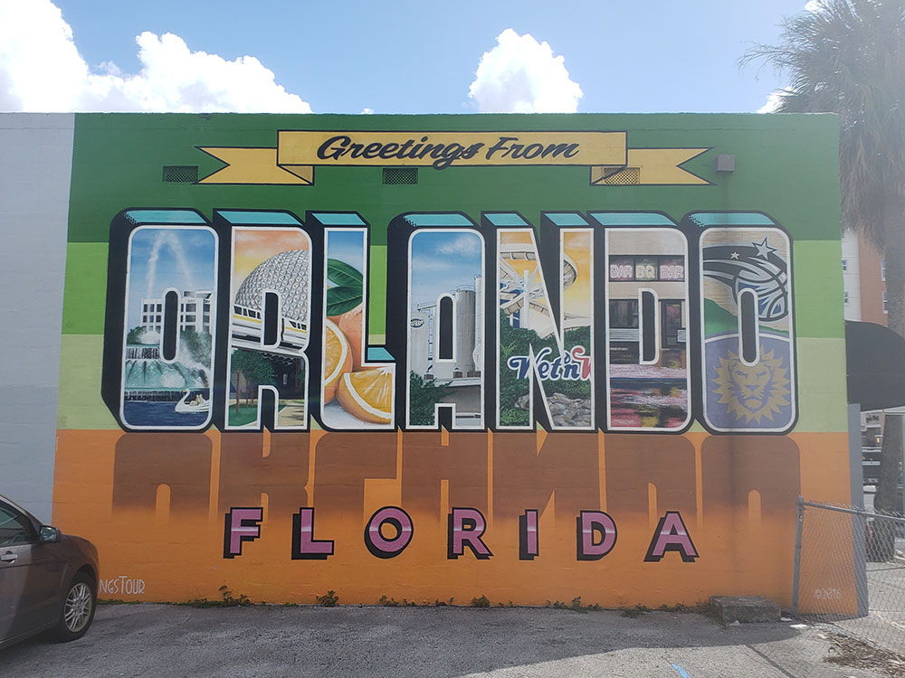